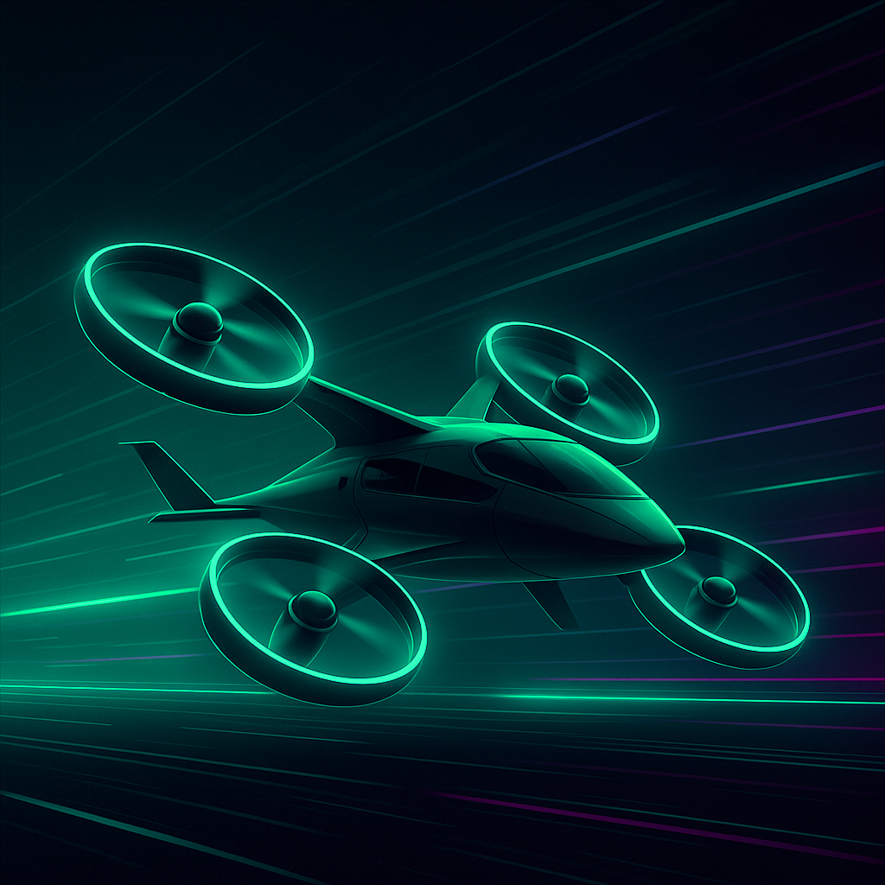
eVTOL Reconnaissance UAV — Chief Engineer
Fixed-wing VTOL unmanned aircraft combining vertical takeoff capability with efficient forward flight. Features distributed electric propulsion and modular payload architecture.
Aerospace Engineering Student
Applied aerodynamics, propulsion systems, and experimental validation. Bridging simulation with real-world performance through CAD, CFD, FEA, and hands-on testing.
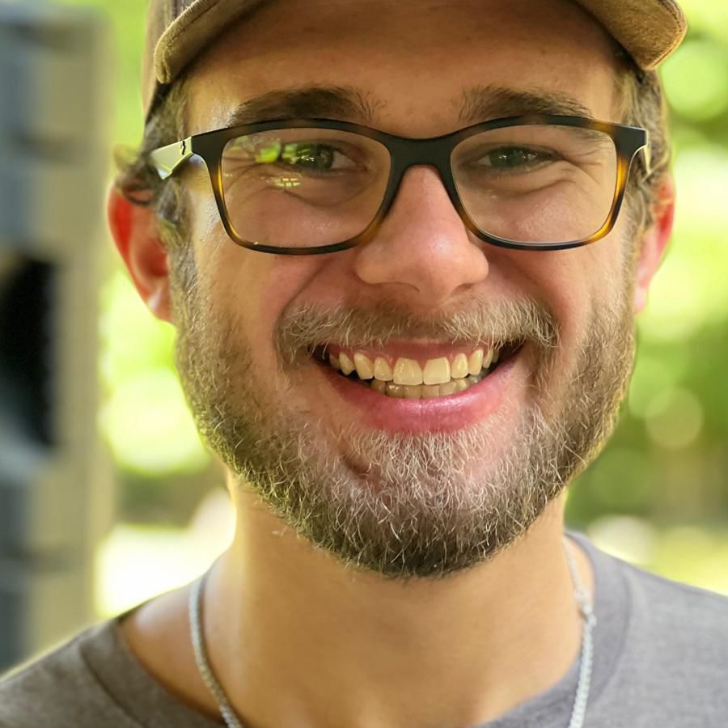
I am a senior Aerospace Engineering student at the University of Alabama with a strong focus on applied aerodynamics, propulsion, and experimental validation. My experience centers on CAD-driven design and high-fidelity analysis using CFD, FEA, and multiphysics tools—primarily ANSYS and SolidWorks—supported by MATLAB and Python for performance evaluation, data processing, and system-level modeling. I work best in hands-on, multidisciplinary environments where analytical predictions are validated through testing, iteration, and real-world performance, and I am motivated by closing the gap between simulation and physical behavior.
The University of Alabama
B.S. Aerospace Engineering
Minor in Mechanical Engineering
Expected May 2026
Dean's List Fall 2025 • Major GPA: 3.0

Fixed-wing VTOL unmanned aircraft combining vertical takeoff capability with efficient forward flight. Features distributed electric propulsion and modular payload architecture.
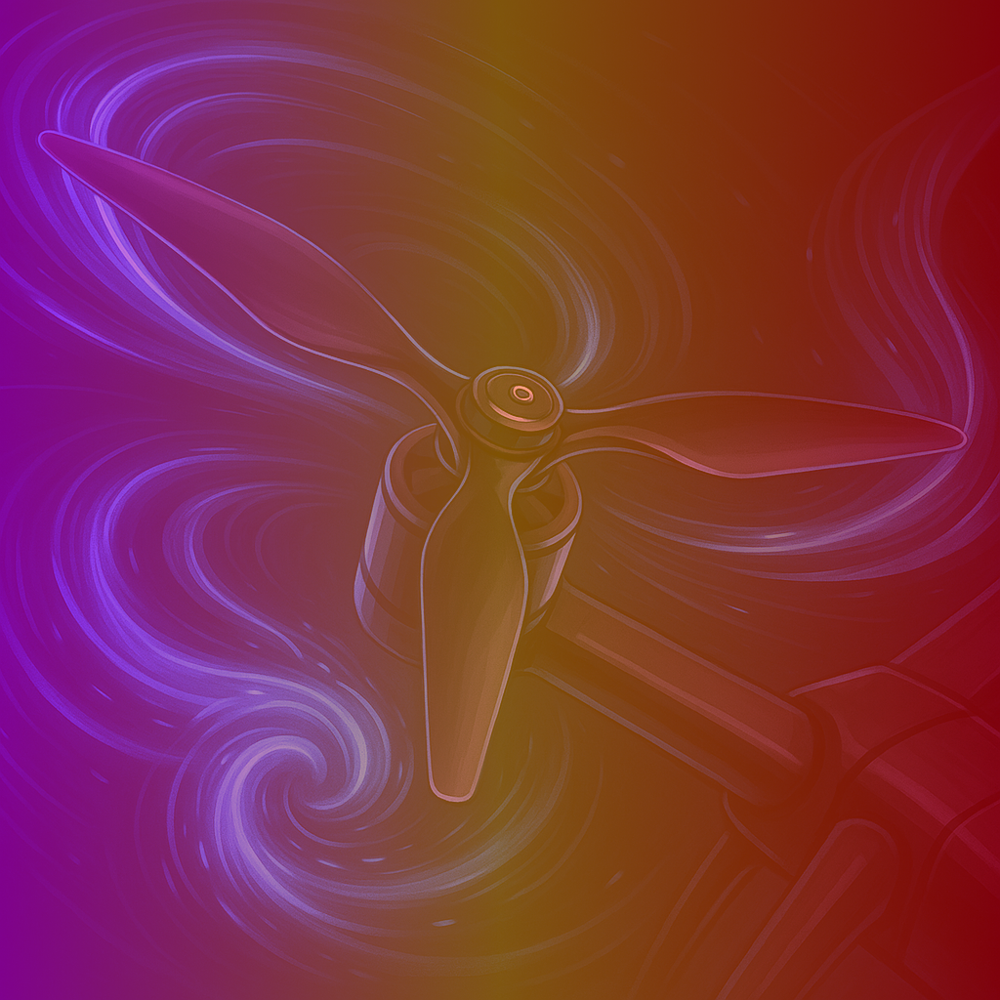
Lead design of drone propellers with vortex inducers, simulating thrust and acoustic characteristics using CFD, validated through wind tunnel testing.
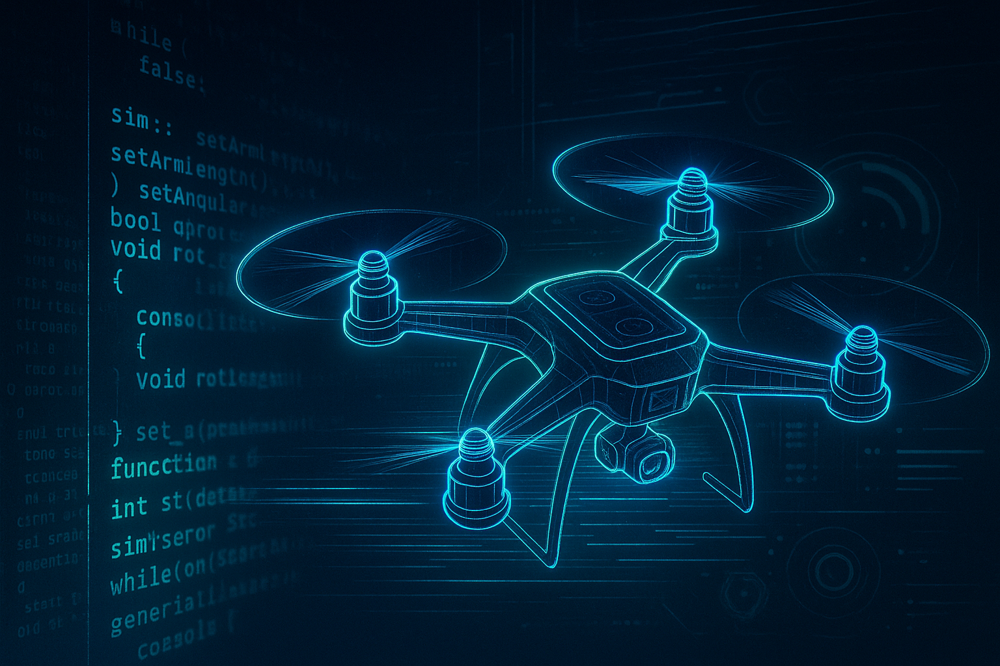
Collaborated on designing components for a single-stage liquid propellant rocket, focusing on fluids systems and hot fire test execution.

High-fidelity quadcopter simulation in Python using the Genesis physics engine, modeling real-time aerodynamics and PID control systems.
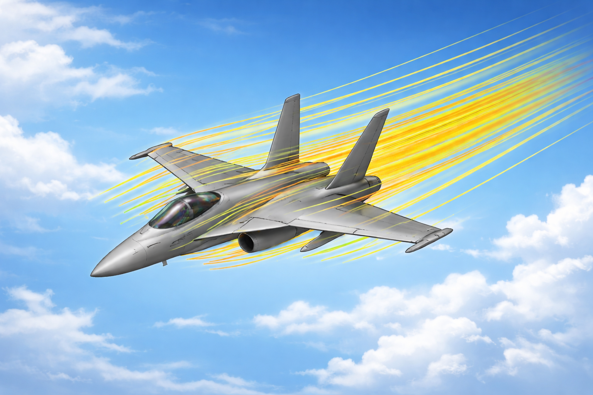
Applied ANSYS Fluent and SolidWorks Flow Simulation to model incompressible and compressible flow regimes, including boundary layer analysis, turbulence modeling, and mesh convergence studies.
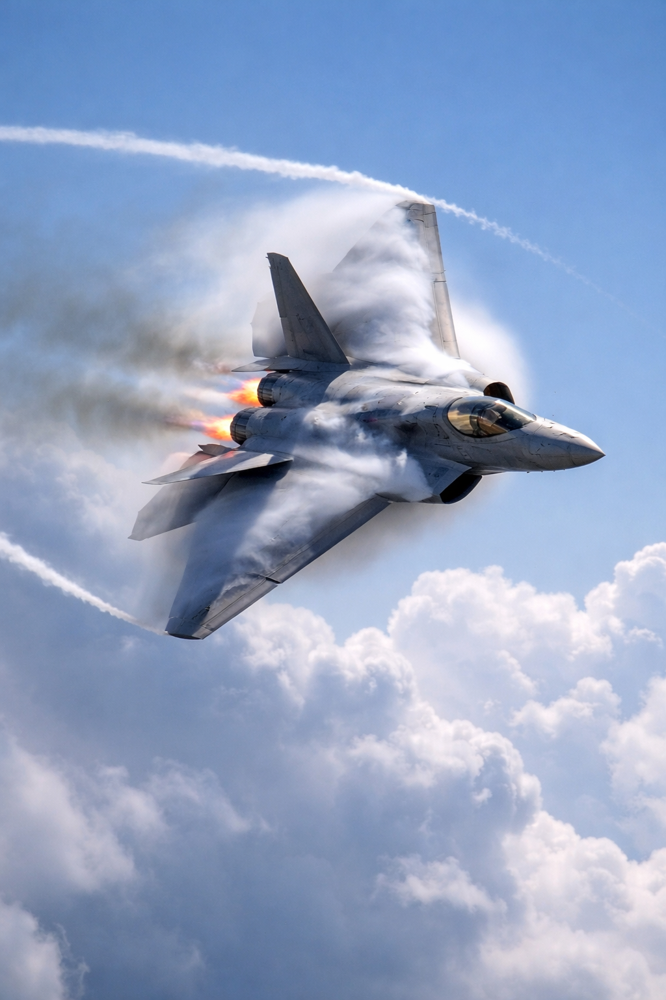
Analyzed longitudinal and lateral-directional stability, aircraft performance envelopes, and dynamic response characteristics using MATLAB-based tools and classical flight mechanics theory.
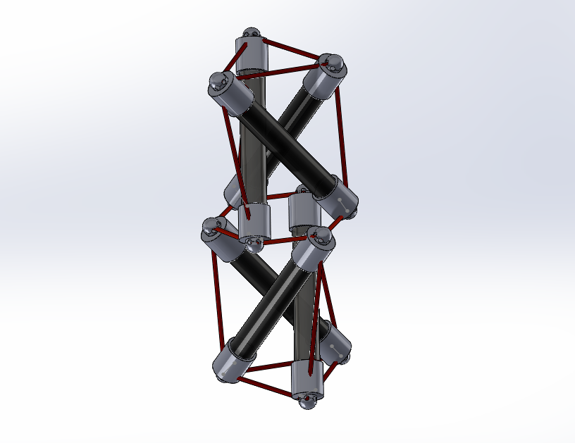
Designed, built, and analyzed a stacked three-beam tensegrity column using SolidWorks CAD, 3D-printed components, and FEA simulation to evaluate structural stability under a 5 lbf load.
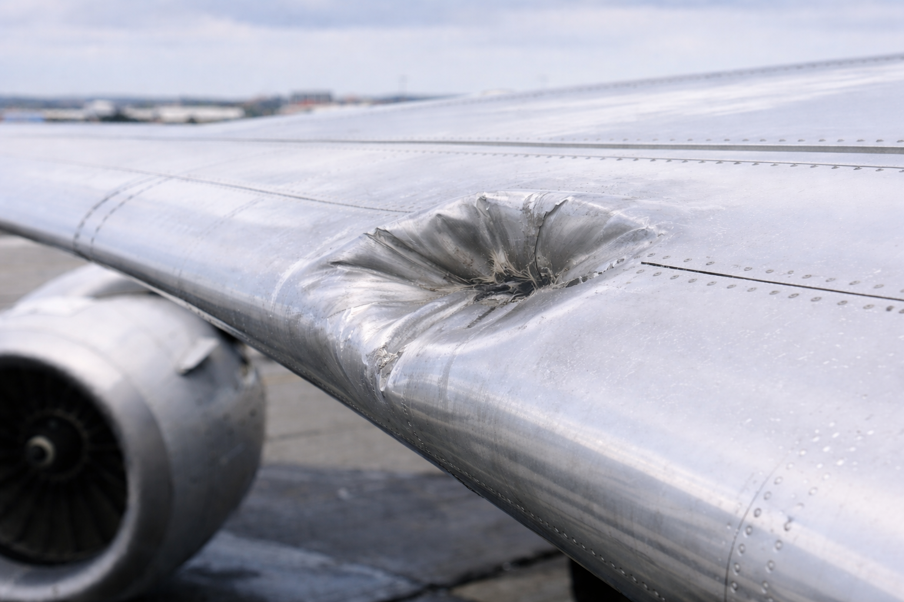
Analyzed aerodynamic penalties and structural deflections caused by a bird-strike dent on a STOL CH 750 rudder assembly using thin-airfoil theory, beam modeling, and MATLAB simulation.
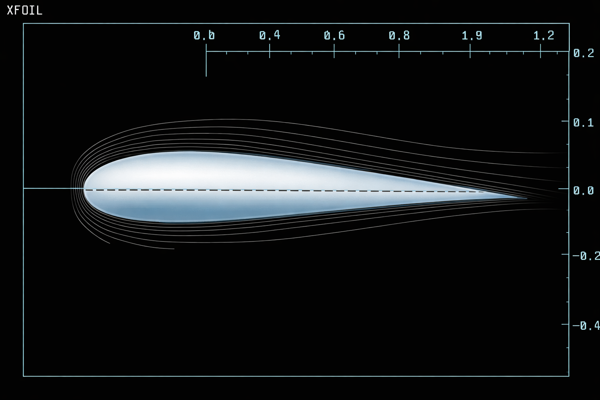
Computed lift, drag, and moment coefficients for the Liebeck LA2573A airfoil using XFLR5 and Excel-based numerical integration of surface pressure and shear stress distributions.
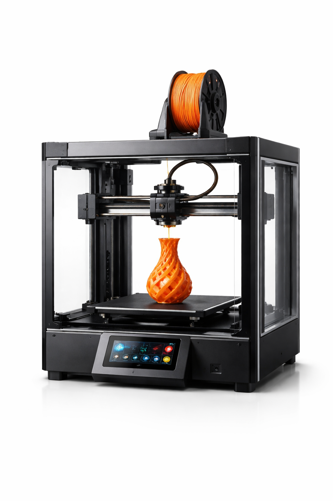
Operate and maintain advanced manufacturing equipment including 3D printers, waterjet systems, and laser engravers. Execute printing with engineering-grade materials and train users on best practices.

Provided daily care for horses and maintained farm infrastructure through equipment operation, fence repairs, and machinery troubleshooting. Developed strong work ethic and mechanical aptitude.
Performed routine vehicle maintenance including oil changes, tire repairs, battery installations, and brake replacements. Assisted mechanics with advanced diagnostics and repairs.
Experience, education, and skills overview
Download PDF →Professional introduction and qualifications
Download PDF →From A.A.E.R.O. Team Lead
Download PDF →From Dr. Jinwei Shen, Associate Professor
Download PDF →URCA 2025 propeller research presentation
Download PDF →I'm currently seeking internship and full-time opportunities in aerospace engineering. Feel free to reach out to discuss potential collaborations or positions.
August 2025 – Present
ORCA is a fixed-wing VTOL unmanned aircraft designed to combine vertical takeoff and landing capability with efficient forward flight using a tilting-propulsion configuration. The platform emphasizes low-Reynolds-number aerodynamic efficiency, lightweight additive manufacturing, and thermal-resilient materials to support reliable flight operations.
January 2025 – Present
The Alabama Aerodynamics Experimental Research Operations (A.A.E.R.O.) group is dedicated to advancing drone propulsion technology through research and development. The objective is to investigate the aerodynamic performance of four distinct propeller designs—conventional (planar), alular, toroidal, and forward-swept—to determine their impact on thrust generation and noise reduction.
October 2023 – Present
Collaborated on designing components for a single-stage, liquid propellant rocket, focusing on fluids systems and propulsion testing. The project involves hands-on experience with real rocket hardware, from design and manufacturing to hot fire testing.
August 2025 – Present
Built a high-fidelity quadcopter simulation in Python using the Genesis physics engine, modeling real-time aerodynamics, rigid-body dynamics, and gravity. The simulation enables rapid testing of control algorithms and flight behavior.
Tuscaloosa, AL
Rigorous coursework in computational fluid dynamics covering the fundamentals of numerical methods for solving the Navier-Stokes equations, turbulence modeling, and practical CFD simulation workflows. Hands-on experience with industry-standard tools including ANSYS Fluent and SolidWorks Flow Simulation applied to aerospace-relevant flow problems.
Tuscaloosa, AL
Comprehensive study of aircraft performance, static and dynamic stability, and flight dynamics. Covered classical flight mechanics theory with application to both conventional and unconventional configurations, developing analytical and computational tools for predicting aircraft behavior across the flight envelope.
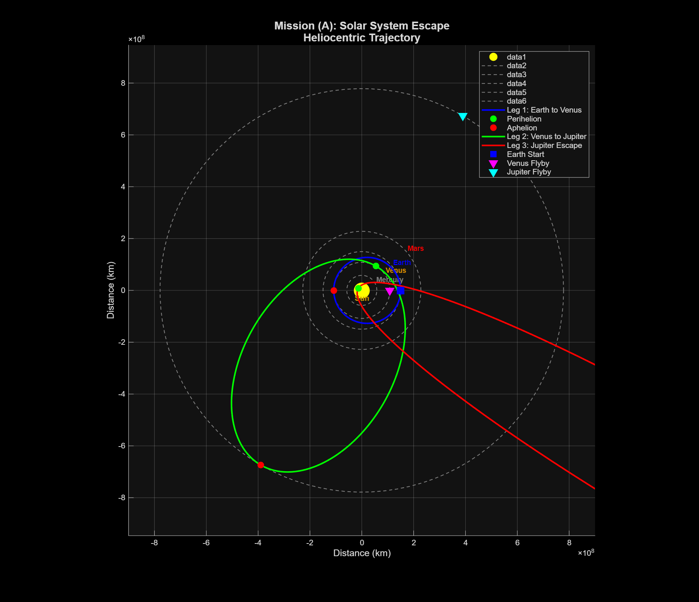
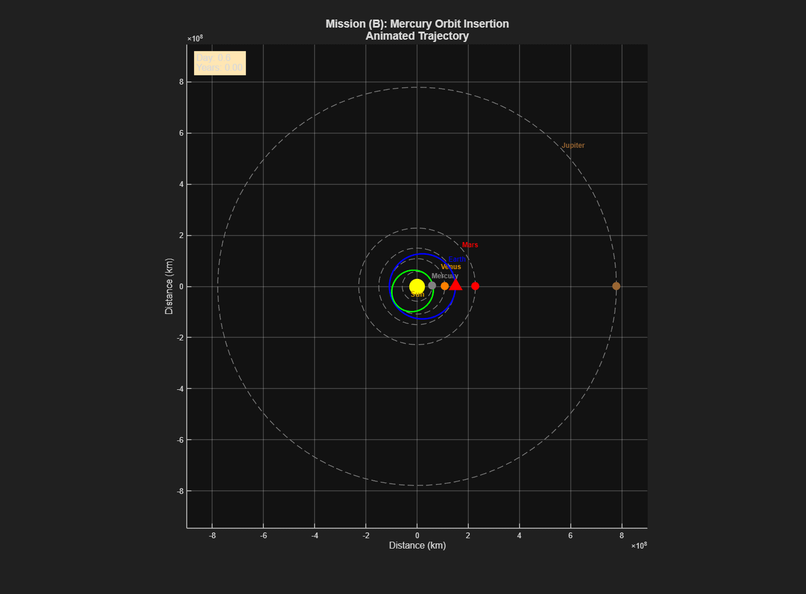
Tuscaloosa, AL
Designed and constructed a stacked three-beam tensegrity column that maintains structural stability through a balance of tension and compression elements. The structure used acrylic rods as compression members and fishing line as tension members, connected by custom 3D-printed end caps with integrated tensioners. The project included analytical equilibrium analysis, SolidWorks FEA simulation, and physical load testing under a 5 lbf applied force.
Tuscaloosa, AL
Investigated how a 5 mm deep, 100 mm long bird-strike dent on the STOL CH 750 rudder assembly affects aerodynamic performance and structural integrity. The analysis combined thin-airfoil theory to quantify lift penalties with Euler–Bernoulli beam modeling to predict spar deflection, supported by MATLAB simulations and a proposed wind-tunnel validation strategy.
Tuscaloosa, AL
Analyzed the aerodynamic performance of the Liebeck LA2573A high-lift airfoil using XFLR5 computational simulations and Excel-based numerical integration. Calculated lift, drag, and quarter-chord moment coefficients from surface pressure (Cp) and skin friction (Cf) distributions across angles of attack from −2° to 10° at Re = 250,000, and evaluated Reynolds number effects from 250,000 to 1,000,000.
The Cube, Tuscaloosa, AL
August 2025 – Present
Work in the university's advanced manufacturing lab supporting academic, research, and student-led projects with cutting-edge fabrication equipment.
Trinity Farm
May 2022 – January 2024
Worked at a horse farm managing daily operations and maintenance, developing strong work ethic, mechanical aptitude, and problem-solving abilities in a hands-on environment.
National Tire and Battery
August 2021 – February 2022
Performed routine vehicle maintenance and assisted with advanced repairs in a fast-paced automotive service environment.